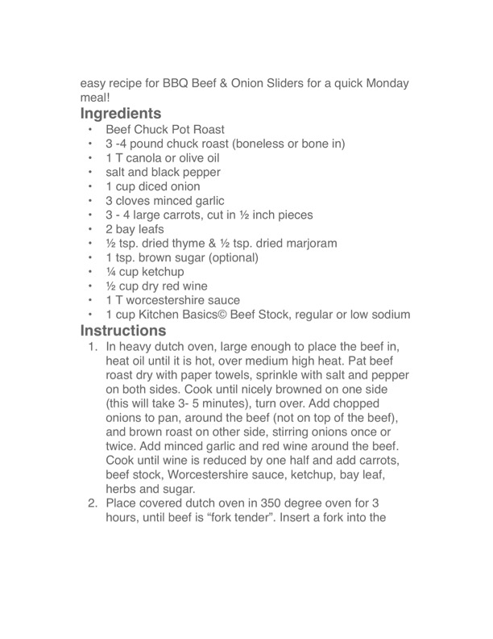

BBQ Beef & Onion Sliders

Original cookbook page 169
Easy recipe for BBQ Beef & Onion Sliders for a quick Monday meal!
Cook: 3 hours
Ingredients
- 3-4 pound Beef Chuck Pot Roast (boneless or bone in)
- 1 T canola or olive oil
- salt and black pepper to taste
- 1 cup diced onion
- 3 cloves minced garlic
- 3-4 large carrots, cut in ½ inch pieces
- 2 bay leafs
- ½ tsp dried thyme
- ½ tsp dried marjoram
- 1 tsp brown sugar (optional)
- ¼ cup ketchup
- ½ cup dry red wine
- 1 T worcestershire sauce
- 1 cup Kitchen Basics© Beef Stock, regular or low sodium
Instructions
- In heavy dutch oven, large enough to place the beef in, heat oil until it is hot, over medium high heat. Pat beef roast dry with paper towels, sprinkle with salt and pepper on both sides. Cook until nicely browned on one side (this will take 3-5 minutes), turn over. Add chopped onions to pan, around the beef (not on top of the beef), and brown roast on other side, stirring onions once or twice. Add minced garlic and red wine around the beef. Cook until wine is reduced by one half and add carrots, beef stock, Worcestershire sauce, ketchup, bay leaf, herbs and sugar.
- Place covered dutch oven in 350 degree oven for 3 hours, until beef is "fork tender". Insert a fork into the roast and it should slide out easily.
Recipe #169 from collection